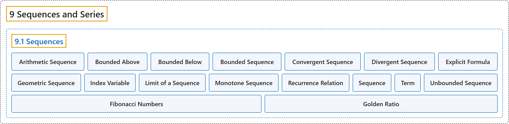

9.1 Sequences
Classification

Glossary
| Term | Definition | 中文翻译 | Source |
|---|---|---|---|
| 9 Sequences and Series 数列与级数 |
(No definition) | （无定义） | Strang & Herman, 2016b, chapter 5 |
| 9.1 Sequences 数列 |
(No definition) | （无定义） | Strang & Herman, 2016b, section 5.1 |
| Arithmetic Sequence 等差数列 |
"a sequence in which the difference between every pair of consecutive terms is the same is called an arithmetic sequence" | 每对相邻项之差都相同的数列称为等差数列 | Strang & Herman, 2016b, chapter 5 Key Terms |
| Bounded Above 有上界 |
"a sequence \(\{a_{n}\}\) is bounded above if there exists a constant \(M\) such that \(a_{n}\le M\) for all positive integers \(n\)" | 数列 \(\{a_{n}\}\) 有上界，如果存在常数 \(M\) 使得对所有正整数 \(n\) 都有 \(a_{n}\le M\) | Strang & Herman, 2016b, chapter 5 Key Terms |
| Bounded Below 有下界 |
"a sequence \(\{a_{n}\}\) is bounded below if there exists a constant \(M\) such that \(M\le a_{n}\) for all positive integers \(n\)" | 数列 \(\{a_{n}\}\) 有下界，如果存在常数 \(M\) 使得对所有正整数 \(n\) 都有 \(M\le a_{n}\) | Strang & Herman, 2016b, chapter 5 Key Terms |
| Bounded Sequence 有界数列 |
"a sequence \(\{a_{n}\}\) is bounded if there exists a constant \(M\) such that \(\vert a_{n}\vert \le M\) for all positive integers \(n\)" | 数列 \(\{a_{n}\}\) 有界，如果存在常数 \(M\) 使得对所有正整数 \(n\) 都有 \(\vert a_{n}\vert \le M\) | Strang & Herman, 2016b, chapter 5 Key Terms |
| Convergent Sequence 收敛数列 |
"a convergent sequence is a sequence \(\{a_{n}\}\) for which there exists a real number \(L\) such that \(a_{n}\) is arbitrarily close to \(L\) as long as \(n\) is sufficiently large" | 收敛数列是这样的数列 \(\{a_{n}\}\)：存在实数 \(L\)，使得只要 \(n\) 足够大，\(a_{n}\) 就任意接近 \(L\) | Strang & Herman, 2016b, chapter 5 Key Terms |
| Divergent Sequence 发散数列 |
"a sequence that is not convergent is divergent" | 不收敛的数列是发散的 | Strang & Herman, 2016b, chapter 5 Key Terms |
| Explicit Formula 显式公式 |
"a sequence may be defined by an explicit formula such that \(a_{n}=f(n)\)" | 数列可以由显式公式定义，使得 \(a_{n}=f(n)\) | Strang & Herman, 2016b, chapter 5 Key Terms |
| Geometric Sequence 等比数列 |
"a sequence \(\{a_{n}\}\) in which the ratio \(a_{n+1}/a_{n}\) is the same for all positive integers \(n\) is called a geometric sequence" | 比值 \(a_{n+1}/a_{n}\) 对所有正整数 \(n\) 都相同的数列 \(\{a_{n}\}\) 称为等比数列 | Strang & Herman, 2016b, chapter 5 Key Terms |
| Index Variable 指标变量 |
"the subscript used to define the terms in a sequence is called the index" | 用来定义数列各项的下标称为指标 | Strang & Herman, 2016b, chapter 5 Key Terms |
| Limit of a Sequence 数列的极限 |
"the real number \(L\) to which a sequence converges is called the limit of the sequence" | 数列所收敛到的实数 \(L\) 称为数列的极限 | Strang & Herman, 2016b, chapter 5 Key Terms |
| Monotone Sequence 单调数列 |
"an increasing or decreasing sequence" | 递增或递减的数列 | Strang & Herman, 2016b, chapter 5 Key Terms |
| Recurrence Relation 递推关系 |
"a recurrence relation is a relationship in which a term \(a_{n}\) in a sequence is defined in terms of earlier terms in the sequence" | 递推关系是这样一种关系：数列中的项 \(a_{n}\) 用数列中前面的项来定义 | Strang & Herman, 2016b, chapter 5 Key Terms |
| Sequence 数列 |
"an ordered list of numbers of the form \(a_{1},a_{2},a_{3},\ldots\) is a sequence" | 形如 \(a_{1},a_{2},a_{3},\ldots\) 的有序数列表是数列 | Strang & Herman, 2016b, chapter 5 Key Terms |
| Term 项 |
"the number \(a_{n}\) in the sequence \(\{a_{n}\}\) is called the \(n\text{th}\) term of the sequence" | 数列 \(\{a_{n}\}\) 中的数 \(a_{n}\) 称为数列的第 \(n\text{th}\) 项 | Strang & Herman, 2016b, chapter 5 Key Terms |
| Unbounded Sequence 无界数列 |
"a sequence that is not bounded is called unbounded" | 无界的数列称为无界数列 | Strang & Herman, 2016b, chapter 5 Key Terms |
| Fibonacci Numbers 斐波那契数 |
"The Fibonacci numbers are defined recursively by the sequence \(\{F_{n}\}\) where \(F_{0}=0,\) \(F_{1}=1\) and for \(n\ge 2,\)" | 斐波那契数由数列 \(\{F_{n}\}\) 递归定义，其中 \(F_{0}=0,\) \(F_{1}=1\)，并且对 \(n\ge 2,\) | Strang & Herman, 2016b, section 5.1 |
| Golden Ratio 黄金比 |
"The number \(\phi =(1+\sqrt{5})/2\) is known as the golden ratio (Figure 5.8 and Figure 5.9)." | 数 \(\phi =(1+\sqrt{5})/2\) 称为黄金比（图 5.8 和图 5.9）。 | Strang & Herman, 2016b, section 5.1 |
References
Strang, G., & Herman, E. (2016b). Calculus volume 2. OpenStax. Retrieved October 29, 2026, from https://openstax.org/details/books/calculus-volume-2